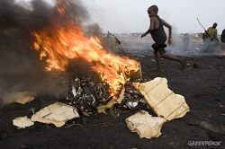
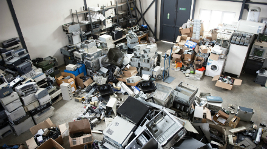

Introduction to E-Waste Pollution
E-waste is a vital issue that needs to be addressed to improve the health of our community. E-waste is harmful to the environment because of the pollution it releases from the materials in the technology. Electronics such as computers, cell-phones, television, are capable of recycling. However, most electronics are thrown away instead of being recycled, which end up causing pollution in the environment. There are 40 million tons of e-waste produced each year. 80-85% of the electronic products that are thrown into landfills cause toxins to be discarded into the environment. Loudoun County itself produces 2% of our waste each year which is about 6,000 tons of waste. Loudoun County, however, tries to address this issue by publicly advertising programs which promote e-waste recycling. E-waste is an important issue which needs to be resolved in order to protect our community from harmful toxins.
For solutions on how to solve the e-waste problem go to Solutions to E-Waste.
Click here to see the E-Waste Animation Part 1.
Click here to see the E-Waste Animation Part 2.
Click here to take the E-WASTE QUIZ
We conducted a poll of 100 students and faculty in our school about their take on E-waste. Click here to view it!
Rock Ridge E-Waste Poll

Harmful Effects of E-Waste
E-waste is hazardous to the environment because it releases toxins into the air and water, which ends up killing many organisms. 40 million tons of e-waste is produced all around the world and only 13% of this amount is recycled properly. E-waste that is thrown away goes through combustion which release toxic pollution in the air which can spread rapidly, causing several diseases from toxic poisoning. The cathode ray tube (CRT), which is used in televisions, can cause heavy metals such as lead and extremely toxic phosphorus to be drained in ground water. Circuit boards that are disposed in the environment, also contain lead that can contaminate surface water and groundwater. E-waste which is thrown away into landfills, ends up harming the environment in more ways than we think.
Click here to see a video on how environment is negatively affected.E-waste in the environment ends up harming the health of many plants and animals. It can cause damage to lungs, skin, and kidney. Exposure from toxic chemicals to humans mostly occurs through the air. Once exposure occurs, nervous, immune, and reproductive system can abnormally change from severe toxic chemicals entering the body. Additionally, lead is known to cause brain damage and death to all organisms from exposure. Lead is considered one of the most toxic material that is used in electronics. Health is negatively affected by the e-waste pollution. In order to protect our community from toxic e-waste chemicals, we must recycle our electronics instead of discarding them into landfills.
Click here to watch how health is negatively impacted because of e-wasteE-waste also harms the ocean hurting many sea creatures who live in it. Heavy metals and Hydrocarbon are released into the water where they pollute the ocean, killing sea creatures. Toxic waste is often dumped into the oceans, rivers, and lakes. These actions pollute the water, causing ocean life to be in risk. Once a certain group of ocean life are killed from the toxic poisoning, other sea creatures can be effected as well, because within the ecosystem all animals depend on each other for food or protection. Additionally, e-waste pollution can hurt individuals due to the transfer of toxic materials in their households. E-waste can harm ocean life as well as individuals from toxic exposure.
Click here to see a video on the negative water impacts of e-waste
For detailed information on how each e-waste component harms the environment go to
E-Waste Recycling Places We Visited

There are several local places that are willing to recycle E-Waste so that E-Waste does not get into landfills and pollute the environment.
- Secure Electronics Recyclers (SER)
111 A Carpenter Drive, Sterling, VA 20164
Map to Secure Electronics Recyclers
SER recycles used computers from public schools, businesses, hospitals, military bases or any other facility inventory.
- Forever Green Recycling
14500 Lee Rd., Unit F, Chantilly, VA 20151
Map to Forever Green Recycling
Forever Green Recycling collects used computers and TVs and dismantles them so that they can be recycled. - Potomac E-Scrap
7917 Wellingford Drive, Manassas, VA 20109
Map to Potomac E-Scrap
Potomac E-scrap collects all types of electronic waste and dismantles, organizes, and ships them to different companies to be recycled.

Click on the links below to recycle your electronics at a local e-waste recycling center.
- Local computer, battery, and cell phone recycling.
- Electronic recycling of any type.
- Electronic waste recycling.
- Computer and electronic recycling.
For more information about our interviews go to OUR INTERVIEWS.
Click here to take the E-WASTE QUIZ